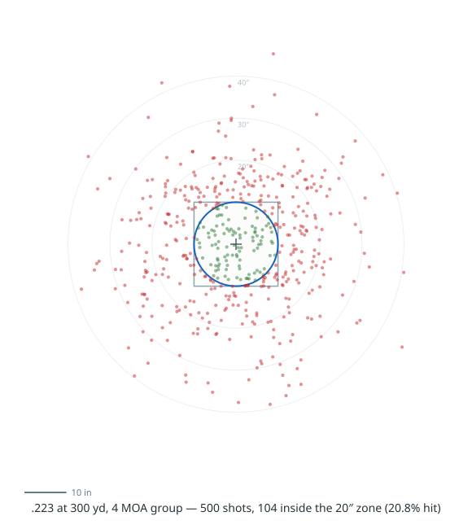

Monte Carlo over the shooter's error budget, plotted on the target.
HitProbability (in the
BallisticCalculator.Tools namespace) answers a practical question: given my rifle,
my ammunition, and how well I can read the range and wind, how often do I hit? It runs a
Monte Carlo over five error sources - muzzle velocity spread, the shooter's group, range
estimation, wind estimation, and (through them) the trajectory itself - and returns the
simulated impacts, the single-shot hit probability, and the number of shots needed for a
given confidence.
GroupSize is the per-axis standard deviation of the shooter's aim. Give it your best
group of up to about ten shots from a fully supported position - that is close to a
one-standard-deviation group. As capability tiers, 4 MOA is an ordinary shooter and
rifle and 1 MOA is a precision setup. The extreme spread of a large group runs about
four times larger, so the 4 MOA group used below produces a cloud spanning roughly 16 MOA
edge to edge. A shooting position widens that supported group per axis through
HorizontalPositionMultiplier and VerticalPositionMultiplier (roughly prone 2,
kneeling 3 to 4, standing 4 to 5); the example below is fired from full support.
A .223 at 300 yards, 4 MOA group, 20-inch target Hide
// using BallisticCalculator.Tools;
var ammo = new Ammunition(
weight: new Measurement<WeightUnit>(55, WeightUnit.Grain),
ballisticCoefficient: new BallisticCoefficient(0.243, DragTableId.G1),
muzzleVelocity: new Measurement<VelocityUnit>(3200, VelocityUnit.FeetPerSecond),
bulletDiameter: new Measurement<DistanceUnit>(0.224, DistanceUnit.Inch),
bulletLength: new Measurement<DistanceUnit>(0.75, DistanceUnit.Inch));
var rifle = new Rifle(
sight: new Sight(new Measurement<DistanceUnit>(2.6, DistanceUnit.Inch),
Measurement<AngularUnit>.ZERO, Measurement<AngularUnit>.ZERO),
zero: new ZeroingParameters(new Measurement<DistanceUnit>(100, DistanceUnit.Yard), null, null),
rifling: new Rifling(new Measurement<DistanceUnit>(8, DistanceUnit.Inch), TwistDirection.Right));
var atmosphere = new Atmosphere();
var calc = new TrajectoryCalculator();
var shot = new ShotParameters
{
Step = new Measurement<DistanceUnit>(50, DistanceUnit.Yard),
MaximumDistance = new Measurement<DistanceUnit>(300, DistanceUnit.Yard), // the target range
ZeroDropAdjustment = calc.CalculateZeroParameters(ammo, atmosphere, rifle, rifle.Zero).ZeroDropAdjustment,
};
var wind = new[]
{
new Wind(new Measurement<VelocityUnit>(10, VelocityUnit.MilesPerHour),
new Measurement<AngularUnit>(90, AngularUnit.Degree)),
};
var parameters = new HitProbabilityParameters
{
TargetSize = new Measurement<DistanceUnit>(20, DistanceUnit.Inch),
MuzzleVelocityDeviationPercent = 5, // 5% muzzle velocity standard deviation
GroupSize = new Measurement<AngularUnit>(4, AngularUnit.MOA), // 4 MOA 1-sigma group (ordinary shooter/rifle)
DistanceErrorPercent = 10, // 10% range estimation error
WindErrorPercent = 10, // 10% wind estimation error
Shots = 500,
Seed = 20250723, // fixed for a reproducible cloud
};
var result = HitProbability.Estimate(calc, ammo, atmosphere, rifle, shot, wind, parameters);
Console.WriteLine($"Hit probability: {result.HitProbability:P1}");
Console.WriteLine($"Shots for 95%: {result.ShotsFor95Percent}");
foreach (var s in result.Shots) // each impact is relative to the point of aim
Plot(s.Horizontal.In(DistanceUnit.Inch), s.Vertical.In(DistanceUnit.Inch));Plotting the 500 impacts on the target (green inside the 20-inch zone, red outside):

The 4 MOA group dominates the spread, so the cloud is large and roughly round, with a slight vertical stretch added by the range and muzzle-velocity errors. Most shots fall outside the 20-inch zone. The results:
Result |
Value |
Single-shot hit probability |
20.8% |
Shots for 50% / 75% / 90% |
3 / 6 / 10 |
Shots for 95% / 98% |
13 / 17 |
A hit is scored inside a circular zone of the given TargetSize (diameter). The
ShotsForNN values come from the single-shot probability p as the smallest
n with 1 - (1-p)^n at least the target confidence.